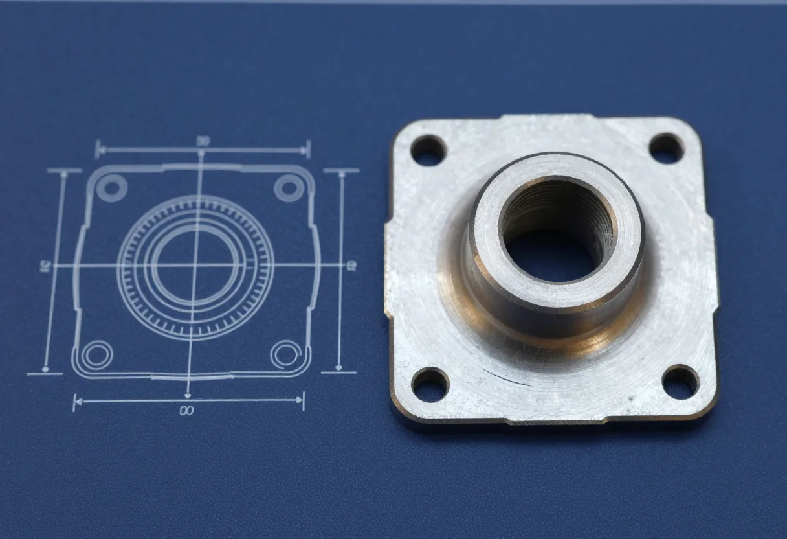
01
できること
素材と加工の組み合わせです。○は得意、△は相談、—はお受けしていません。
| 素材 | 旋削 | フライス | 穴あけ・ねじ | 仕上げ |
|---|---|---|---|---|
| アルミ | ○ | ○ | ○ | ○ |
| 真鍮 | ○ | ○ | ○ | △ |
| ステンレス | ○ | △ | ○ | ○ |
| チタン | △ | △ | △ | — |
架空の会社の設定です。実在の工場ではありません。
次へ02見積もりの目安02
見積もりの目安
素材・大きさ・個数を選ぶと、加工の流れと日数の目安が出ます。金額は出しません。
03
部品標本
1個から削り出した部品の例です。寸法は例です。
-
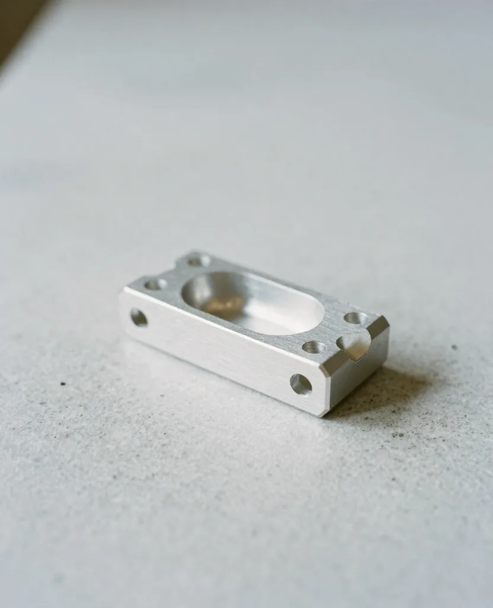
P-01ブラケット／アルミ／40×20×12 -
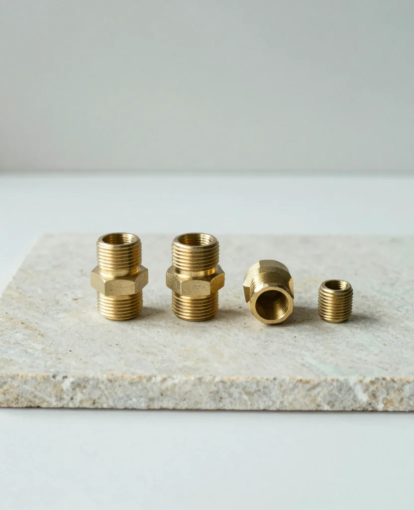
P-02継手・プラグ／真鍮 -
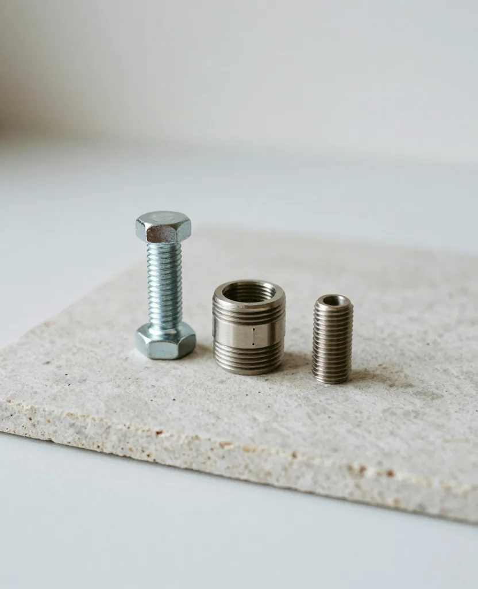
P-03ブッシュ・スペーサー／ステンレス -
P-04歯車・つまみ・カラー／真鍮ほか（動画） -
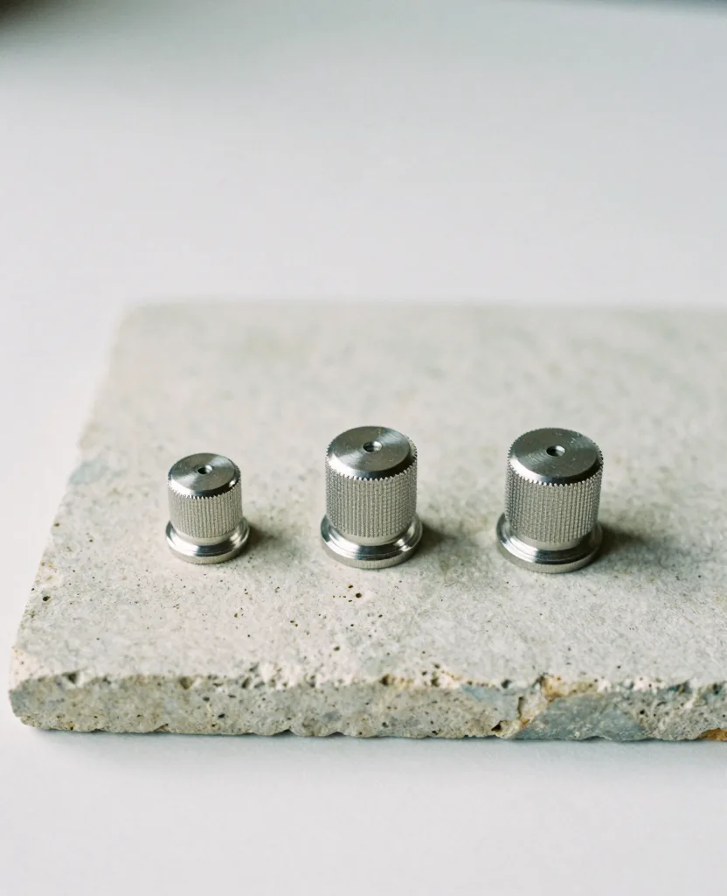
P-05つまみ／アルミ -
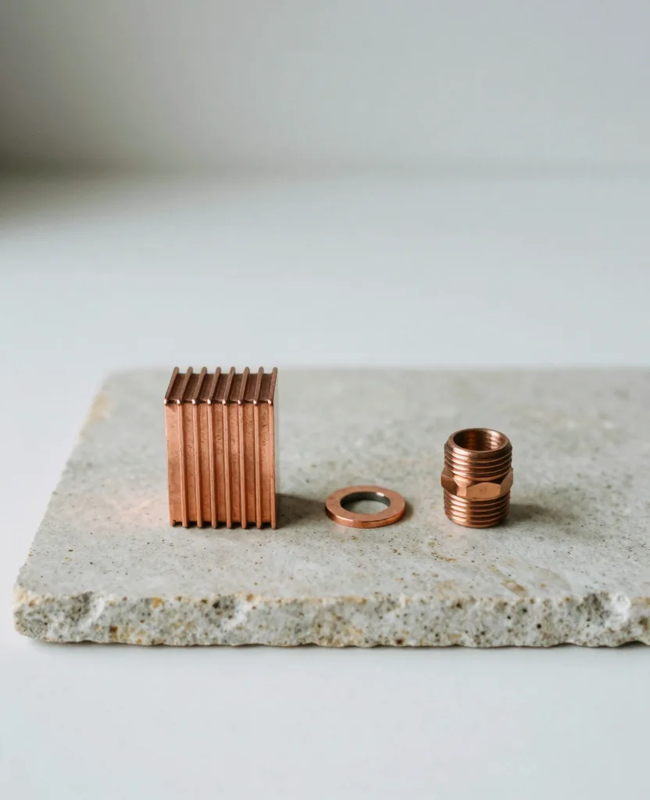
P-06放熱ブロック・継手／銅 -
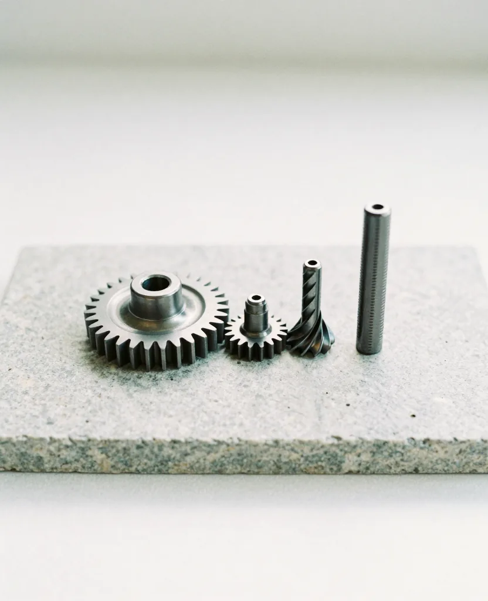
P-07歯車・軸／鋼 -
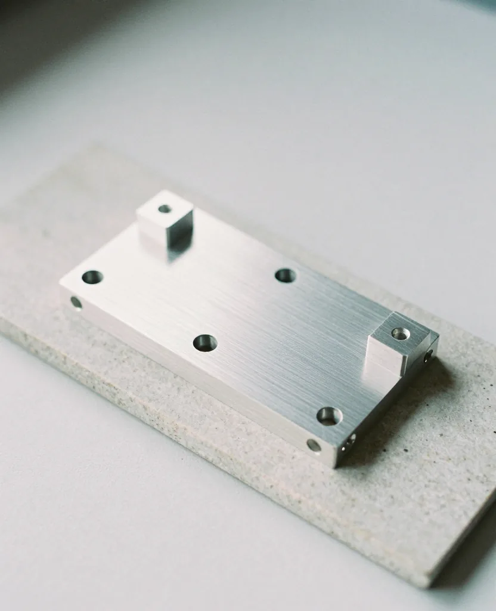
P-08治具の板／アルミ -
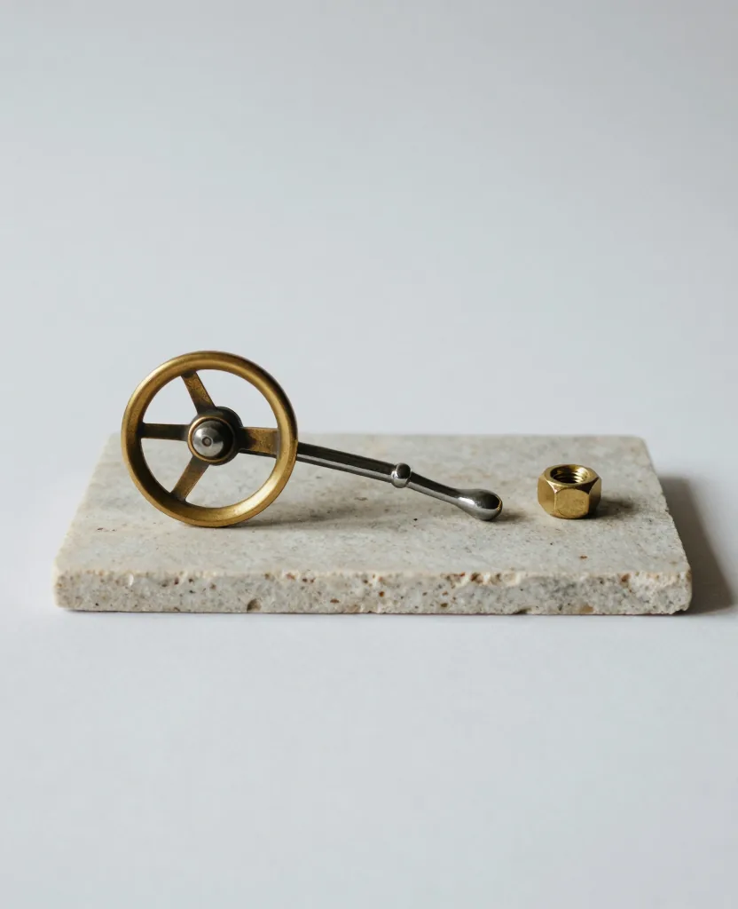
P-09ハンドホイール・レバー／真鍮ほか -
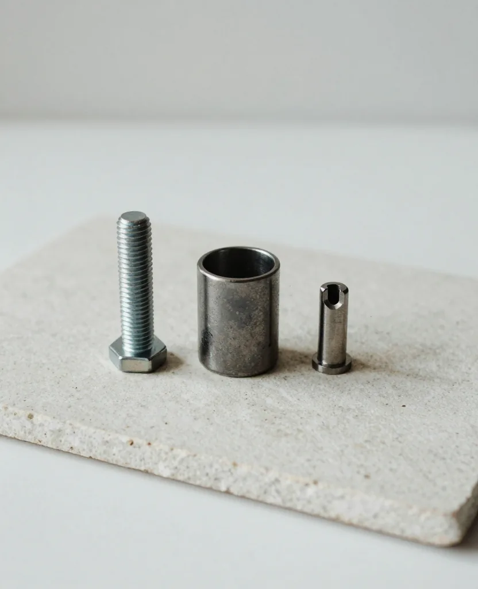
P-10スリーブ・軸／チタン
04
工場の数字
- 創業
- 1968年
- 人数
- 12名
- 加工機
- 9台
- 最小の個数
- 1個
- 仕上がりの目標
- ±0.01ミリ
架空の会社の設定です。数字はすべて例です。
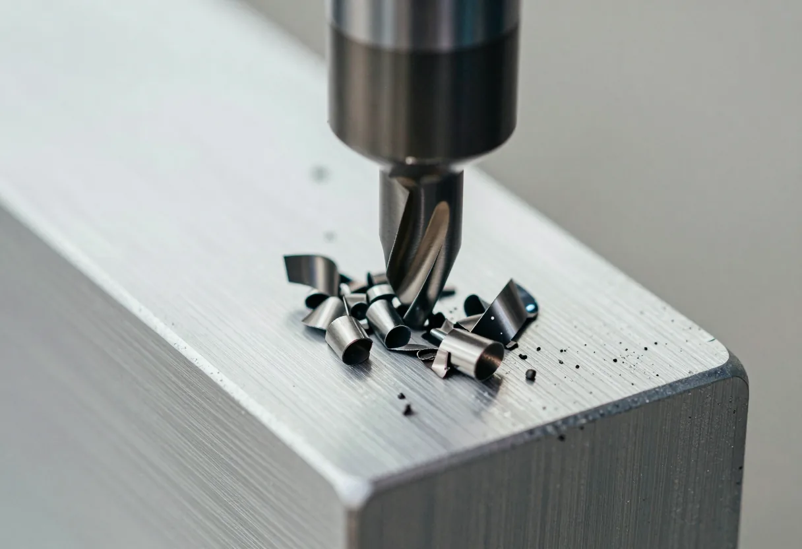
05
図面から納品まで
- 01
図面
図面か、スケッチと寸法をお送りください。
- 02
段取り
削る順番と、固定のしかたを決めます。
- 03
加工
旋盤とマシニングで削り出します。
- 04
検査
ノギスと測定機で、寸法を確かめます。
- 05
出荷
傷が付かないよう、1個ずつ包んで送ります。
06
問い合わせ
図面がまだなくても大丈夫です。作りたい物を教えてください。